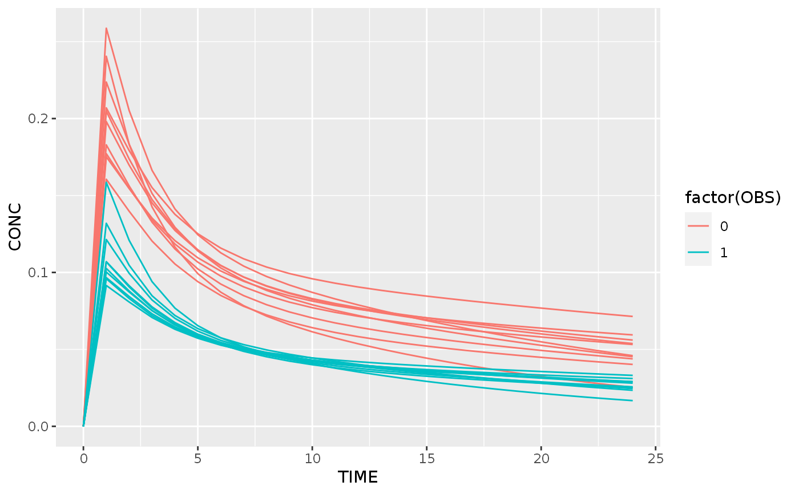

Simulate dose adaptation in a population
findDose( fit, regimen = fit$regimen, doseRows = NULL, interval = c(0, 1e+10), target, se.fit = FALSE, level = 0.95, mc.maxpts = 100, ... ) findDoses(fit, regimen = fit$regimen, targetMetadata = NULL) doseSimulation( x, ..., optimize, predict, .fit = "fit", .iterationFit = "iterationFit", .next_observed = "next_observed", .next_regimen = "next_regimen", .verbose = TRUE )
| fit | tdmorefit object |
|---|---|
| regimen | the treatment regimen to optimize |
| doseRows | which rows of the regimen to adapt when searching for a new dose, or NULL to take the last one |
| interval | which interval to search a dose in. Defaults to a ridiculously high range |
| target | target value, as a data.frame |
| se.fit | TRUE to provide a confidence interval on the dose prediction, adding columns dose.median, dose.lower and dose.upper |
| level | the confidence interval on the dose, only used if se.fit is true |
| mc.maxpts | maximum number of points to sample in Monte Carlo simulation |
| ... | passed to `posthoc` |
| targetMetadata | defined target troughs as list(min=X, max=Y). If NULL or all NA, taken from the model metadata. |
| x | tibble with at least a `fit` column |
| optimize | an optimization function for dose simulation, corresponding to function(fit, regimen, truth), and returning a list(nextTime, regimen) |
| predict | a prediction function for dose simulation, corresponding to function(truth, newRegimen, nextTime) If missing, we simply predict using the true fit. We evaluate the nextObservations time points using the 'true' model and the new regimen. |
| .fit | Either a string or NULL. If a string, the output will contain a column with that name, storing the fit |
| .iterationFit | column name for the iteration fit |
| .next_observed | What will be the predicted next observation? |
| .next_regimen | What will be the next regimen? |
| .verbose | Be verbose when simulating? |
a recommendation object
This tool simulates a dose adaptation run for an individual. We expect a .fit column in the data, that represents the best model fit for the given subject. All other columns are passed to the posthoc function when calculating the next fit, except for the 'observed' data (that is replaced by the simulated data) and the 'regimen' data (that is replaced by the adapted regimen)
The DoseSimulation iterates as follows: 1. A fit is generated using the up-to-now observed concentrations 2. The optimize method is called with the following arguments: `optimize( fit, regimen, truth )` It is up to the optimizer to determine how to optimize the treatment regimen. The optimizer returns a `list( nextTime=nextObservations, regimen=newRegimen, extra=tibble() )` If `nextTime` is not a finite number, we stop the simulation. If `nextTime` is missing, we use the next observation from the posthocfit. 3. The predict method is called with the following arguments: `predict(truth, newRegimen, nextTime)` This predicts the next observation.
findDose: Find the dose required to hit a target.
findDoses: Optimize the regimen, using the metadata defined by the model
This performs a step-wise optimization of multiple doses.
#> #>#> #> #>#> #> #>#>#>#>db <- m1 %>% as.population(covariates=c(WT=70)) %>% as.sample(N=10) optimResult <- doseSimulation(db, regimen=data.frame(TIME=0, AMT=5), optimize=function(fit, regimen, truth) { rec <- findDose(fit, target = data.frame(TIME=24, CONC=0.05)) list( nextTime=if(nrow(fit$observed)==0) 12 else NA, regimen=rec$regimen ) })#> Iteration # 0 #> Iteration # 1 #> Iteration # 0 #> Iteration # 1 #> Iteration # 0 #> Iteration # 1 #> Iteration # 0 #> Iteration # 1 #> Iteration # 0 #> Iteration # 1 #> Iteration # 0 #> Iteration # 1 #> Iteration # 0 #> Iteration # 1 #> Iteration # 0 #> Iteration # 1 #> Iteration # 0 #> Iteration # 1 #> Iteration # 0 #> Iteration # 1predictions <- optimResult %>% dplyr::ungroup() %>% dplyr::mutate( ipred = purrr::map2(fit, next_regimen, ~predict(.x, regimen=.y, newdata=0:24)) ) z1 <- predictions %>% tidyr::unnest(cols=ipred) %>% ggplot(aes(x=TIME, y=CONC, color=factor(OBS))) + geom_line(aes(group=interaction(ID,OBS))) print(z1)